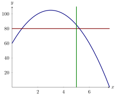
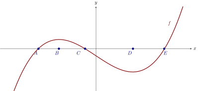
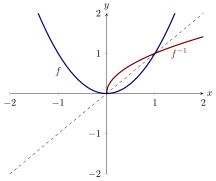
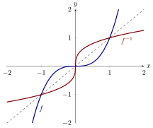

Here we “undo” functions.
If a function maps every “input” to exactly one “output,” an inverse of that function
maps every “output” to exactly one “input.” We need a more formal definition to
actually say anything with rigor.
Let be a function with domain and range :
Let be a function with domain and range :
We say that and are
inverses of each other if for all in , and also for all in .
Sometimes we write in this case.
and
So, we could rephrase these conditions as
Let be a function. If the point is on the graph of , what point must be the the
graph of ?
Since , we must have , so . Thus is on the graph of . This is a general rule. If is on
the graph of , then will be on the graph of .
This notation can be very confusing. Keep a watchful eye:
Which of the following is notation for the inverse of the function on the interval ?
is the inverse function for on the interval .
On the other hand,
Consider the graph of below
Is invertible at ?
So far, we’ve only dealt with abstract examples. Let’s see if we can ground this in a
real-life context.
The function takes a temperature in degrees Celsius, and converts it into
Fahrenheit. The domain of this function is . What does the inverse of this function
tell you? What is the inverse of this function?
If converts Celsius measurements to Fahrenheit measurements of temperature, then
converts Fahrenheit measurements to Celsius measurements of temperature.
To find the inverse function, first note that Now write out the left-hand side of the equation and solve
for .
So is the inverse function of , which converts a Fahrenheit measurement
back into a Celsius measurement. The domain of this inverse function is
.
Finally, we could check our work again using the definition of inverse functions. We
have already guaranteed that since we solved for in our calculation. On the other
hand,
which you should simplify to check that .
We have examined several functions in order to determine their inverse functions, but
there is still more to this story. Not every function has an inverse function, so we
must learn how to check for this situation.
Let be a function, and imagine that the points and are both on its graph. Could
have an inverse function?
The function could not have an inverse function. Imagine that it did. Then and .
Then we have both and . Since a function cannot send the same input to two
different outputs, must not have an inverse function.
Look again at the last question. If two different inputs for a function have the same
output, there is no hope of that function having an inverse function. Why? This is
because the inverse function must also be a function, and a function can
only have one output for each input. More specifically, we have the next
definition.
A function is called
one-to-one if each output value corresponds to exactly one
input value.
Which of the following are functions that are also one-to-one?
Mapping words to
their meaning in a dictionary. Mapping social security numbers of living people to
actual living people. Mapping people to their birthday. Mapping mothers to their
children.
- Since words may have more than one definition, “relating words to their
definition in a dictionary” is not a function.
- Since every social security number corresponds exactly to one person,
“relating social security numbers of living people to actual living people” is
a function. Also, since each person has exactly one social security number,
it is one-to-one.
- Since every person only has one birth date, “relating people to their birth
date” is a function. However, many people have the same birth date, hence
this function is not one-to-one.
- Since mothers can have more (or less) than one child, “relating mothers
to their children” is not a function.
Which of the following functions are one to one? Select all that apply.
You may recall that a plot gives as a function of if every vertical line crosses the
plot at most once, and we called this the vertical line test. Similarly, a function is
one-to-one if every horizontal line crosses the plot at most once, and we call this the
horizontal line test.
A function is one-to-one at if the horizontal line intersects the curve in exactly one
point. This is called the
horizontal line test.

As we have discussed, we can only find an inverse of a function when it is one-to-one.
If a function is not one-to-one, but we still want an inverse, we must restrict the
domain. Let’s see what this means in our next examples.
Consider the graph of the function below:

On which of the following intervals is one-to-one?
This idea of restricting the domain is critical for understanding functions like
.
We define to be the positive square-root, so that we can be sure that is a function.
Thinking of the square-root as the inverse of the squaring function, we can see the
issue a little more clearly. There are two -values that square to . Since we
require that
square-root is a function, we must have only one output
value when we plug in . We choose the positive square-root, meaning that
Consider the function Does have an inverse? If so, what is it? If not, attempt to
restrict the domain of and find an inverse on the restricted domain.
In
this case is not one-to-one. However, it is one-to-one on the interval .
Hence we can find an inverse of on this interval. We plug into and write
Since the domain of is , we know that is positive. This means we can take the
square-root of each side of the equation to find that

Consider the function Does have an inverse? If so, what is it? If not, attempt to
restrict the domain of and find an inverse on the restricted domain.
In this case is
one-to-one. We may write
For your viewing pleasure we give a graph of and . Note, the graph of is the image
of after being flipped over the line .
